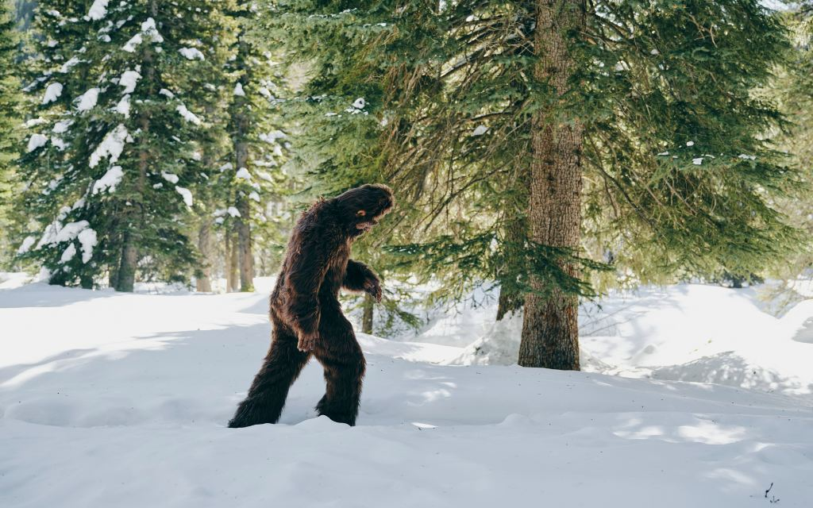

¡¡¡¡¡FOTOS INEDITAS!!!!
Foto de Pie grande mas reciente
Esta foto fue tomada por unos campistas que iban a pasar un buen rato en la montaña de Yellowstone. El grupo había planeado una escapada para disfrutar de la belleza natural del parque y relajarse en el entorno impresionante que ofrece la región. El día estaba soleado y el aire fresco, perfecto para una jornada al aire libre.
Sin embargo, mientras se preparaban para encender una fogata y preparar su cena, escucharon un sonido extraño que rompió la tranquilidad de la noche. Inicialmente, pensaron que podría ser algún animal salvaje o el viento jugando con las ramas, pero el sonido persistió y se volvió más inquietante.
Intrigados y algo preocupados, decidieron sacar su cámara para capturar el momento y descubrir la fuente del ruido. Con el corazón acelerado, enfocaron su cámara hacia la dirección del sonido y capturaron esta impactante imagen. La foto muestra una escena misteriosa y enigmática que dejó a los campistas con más preguntas que respuestas.
Primer foto tomada

La primera foto que se conoce de esta serie histórica fue capturada en un momento sorprendente. Los pioneros de la fotografía, fascinados por la capacidad de inmortalizar instantes, realizaron este registro en un contexto lleno de emoción e incertidumbre. La imagen captura un momento especial que ha perdurado a lo largo del tiempo.
Este primer registro fotográfico, realizado con equipos rudimentarios comparados con los estándares actuales, marca un hito importante en la evolución de la fotografía. La técnica utilizada para tomar esta foto era innovadora para su época, demostrando la habilidad y creatividad de los primeros fotógrafos.
La foto no solo representa un avance tecnológico, sino también un vistazo al pasado que nos permite entender mejor la historia y el desarrollo de la fotografía. Cada detalle de la imagen cuenta una historia, desde el proceso técnico hasta el contexto histórico en el que se tomó.